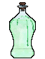
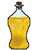
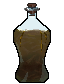
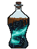
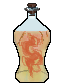
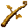
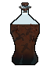
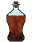
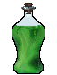

Путь «Мать»
От слабой к сильной: Seq 9 «Садовник» → Seq 1 «Странник Природы». Сменить этот путь на другой нельзя.
| Seq | Последовательность | Ступень сервера |
|---|---|---|
| 9 | Садовник | II |
| 8 | Врач | III |
| 7 | Жрец Урожая | IV |
| 6 | Биолог | V |
| 5 | Друид | VI |
| 4 | Классический Алхимик | VII |
| 3 | Гробоносец | VIII |
| 2 | Матриарх Опустошения | — |
| 1 | Странник Природы | — |
У каждой последовательности: зелье и его ингредиенты (главный — первым), способности, которые она открывает, и отыгрыш — действия, которые переваривают зелье. Ингредиенты указаны с двумя самыми доступными источниками; все — по ссылке. Ингредиенты Seq 9–6 этого пути бывают и в товарах у жителя Торговец Потусторонних — у каждого по 2 случайных предложения на уровень (цены).
Seq 9 · Садовник
Зелье  Садовник Зелье, формула
Садовник Зелье, формула  Садовник Рецепт зелья (Последовательность 9). Эта Seq нужна для ступени II.
Садовник Рецепт зелья (Последовательность 9). Эта Seq нужна для ступени II.
Ингредиенты
 Садовник Характеристика Потустороннего (Последовательность 9) — характеристика Потустороннего
Садовник Характеристика Потустороннего (Последовательность 9) — характеристика Потустороннего Порошок драконьей кровавой травы — блок: Мак, Красный тюльпан — 20 % за блок. Все источники (2)
Порошок драконьей кровавой травы — блок: Мак, Красный тюльпан — 20 % за блок. Все источники (2) Очищенная вода — крафт: печь; сундук: Постройки Мира духов — 39 %. Все источники (3)
Очищенная вода — крафт: печь; сундук: Постройки Мира духов — 39 %. Все источники (3) Сок дурмана — пустая бутылка: Сирень — 50 % за попытку, бутылка остывает 1 с. Все источники (2)
Сок дурмана — пустая бутылка: Сирень — 50 % за попытку, бутылка остывает 1 с. Все источники (2) Осколок призмарина — обычный предмет
Осколок призмарина — обычный предмет
Способности
- Медитация — Медитировать, восполняя духовность
- Взращивание растений — Растения растут стремительно
- Физическое усиление (пассивная)
Отыгрыш — переваривание за действие и перерыв между засчитанными:
- Посадить культуру — 1,9 %, раз в 15 с
- Посадить саженец — 0,95 %, раз в 10 с
- Собрать урожай — 1,4 %, раз в 10 с
- Использовать костную муку — 0,95 %, раз в 8 с
- Использовать компостер — 0,38 %, раз в 10 с
- Посадить цветок — 0,38 %, раз в 10 с
- Собрать цветок — 0,28 %, раз в 10 с
Seq 8 · Врач
Зелье  Врач Рецепт зелья (Последовательность 8). Эта Seq нужна для ступени III.
Врач Рецепт зелья (Последовательность 8). Эта Seq нужна для ступени III.
Ингредиенты
 Врач Характеристика Потустороннего (Последовательность 8) — характеристика Потустороннего
Врач Характеристика Потустороннего (Последовательность 8) — характеристика Потустороннего Порошок подсолнечника с чёрной каймой — блок: Подсолнух (ночью) — 12 % за блок. Все источники (2)
Порошок подсолнечника с чёрной каймой — блок: Подсолнух (ночью) — 12 % за блок. Все источники (2) Порошок травы золотого плаща — блок: Одуванчик, Подсолнух (ножницами) — 30 % за блок; сундук: Постройки Мира духов — 29 %. Все источники (3)
Порошок травы золотого плаща — блок: Одуванчик, Подсолнух (ножницами) — 30 % за блок; сундук: Постройки Мира духов — 29 %. Все источники (3) Сок туманного древня — пустая бутылка: любое бревно или листва (в биоме: Болото, Мангровое болото, Тёмный лес; во время дождя) — 50 % за попытку, бутылка остывает 2 с. Все источники (2)
Сок туманного древня — пустая бутылка: любое бревно или листва (в биоме: Болото, Мангровое болото, Тёмный лес; во время дождя) — 50 % за попытку, бутылка остывает 2 с. Все источники (2) Раковина наутилуса — обычный предмет
Раковина наутилуса — обычный предмет
Способности
- Духовное зрение
- Исцеление — Исцелить себя или союзников
- Очищение — Очистить себя или других от негативных эффектов
Отыгрыш — переваривание за действие и перерыв между засчитанными:
- Покормить животное — 0,84 %, раз в 10 с
- Размножить животных — 1,3 %, раз в 20 с
- Применить «Исцеление» — 1,7 %, раз в 15 с
- Выпить зелье исцеления — 0,67 %, раз в 10 с
- Съесть золотое яблоко — 0,5 %, раз в 10 с
- Сварить зелье — 0,67 %, раз в 15 с
- Сохранять полное здоровье — 0,084 %, раз в 30 с
Seq 7 · Жрец Урожая
Зелье  Жрец Урожая Рецепт зелья (Последовательность 7). Эта Seq нужна для ступени IV.
Жрец Урожая Рецепт зелья (Последовательность 7). Эта Seq нужна для ступени IV.
Ингредиенты
 Жрец Урожая Характеристика Потустороннего (Последовательность 7) — характеристика Потустороннего
Жрец Урожая Характеристика Потустороннего (Последовательность 7) — характеристика Потустороннего Порошок самоцвета-капли — крафт: верстак; сундук: Постройки Мира духов — 24 %. Все источники (4)
Порошок самоцвета-капли — крафт: верстак; сундук: Постройки Мира духов — 24 %. Все источники (4) Эфирное масло травы грёз — крафт: верстак. Все источники (2)
Эфирное масло травы грёз — крафт: верстак. Все источники (2) Сок чёрного дурмана — пустая бутылка: Визерская роза — 60 % за попытку, бутылка остывает 1 с; сундук: Постройки Мира духов — 41 %. Все источники (3)
Сок чёрного дурмана — пустая бутылка: Визерская роза — 60 % за попытку, бутылка остывает 1 с; сундук: Постройки Мира духов — 41 %. Все источники (3) Черепаший щиток — обычный предмет
Черепаший щиток — обычный предмет
Способности
- Управление растениями — Приказать растениям атаковать или опутать врагов
Отыгрыш — переваривание за действие и перерыв между засчитанными:
- Собрать сладкие ягоды — 0,74 %, раз в 10 с
- Собрать урожай — 1,1 %, раз в 10 с
- Использовать костную муку — 0,74 %, раз в 8 с
- Собрать цветок — 0,37 %, раз в 10 с
- Поймать рыбу — 0,37 %, раз в 10 с
- Рубить дерево — 0,22 %, раз в 10 с
- Использовать компостер — 0,37 %, раз в 15 с
Seq 6 · Биолог
Зелье  Биолог Рецепт зелья (Последовательность 6). Эта Seq нужна для ступени V.
Биолог Рецепт зелья (Последовательность 6). Эта Seq нужна для ступени V.
Ингредиенты
 Биолог Характеристика Потустороннего (Последовательность 6) — характеристика Потустороннего
Биолог Характеристика Потустороннего (Последовательность 6) — характеристика Потустороннего Порошок травы драконьего зуба — крафт: верстак. Все источники (2)
Порошок травы драконьего зуба — крафт: верстак. Все источники (2) Прядь волос глубоководной наги — существо мода: Мурлок (водится: океаны) — 13 % за убийство. Все источники (2)
Прядь волос глубоководной наги — существо мода: Мурлок (водится: океаны) — 13 % за убийство. Все источники (2) Вода Золотого источника — пустая бутылка: источник воды (в биоме: Заросшие пещеры, Карстовые пещеры) — 100 % за попытку, бутылка остывает 0,5 с. Все источники (2)
Вода Золотого источника — пустая бутылка: источник воды (в биоме: Заросшие пещеры, Карстовые пещеры) — 100 % за попытку, бутылка остывает 0,5 с. Все источники (2)- Блок мха — обычный предмет
Способности
- Сотворение яда — Создать смертельный яд и распространить его по области или пронзить врагов ядовитыми нитями
- Скрещивание — Создать гибрид двух животных: первое задаёт облик, второе — характеристики
Отыгрыш — переваривание за действие и перерыв между засчитанными:
- Размножить животных — 0,95 %, раз в 20 с
- Приручить животное — 0,63 %, раз в 15 с
- Использовать бирку — 0,32 %, раз в 10 с
- Применить «Скрещивание» — 1,3 %, раз в 20 с
- Посмотреть в подзорную трубу — 0,19 %, раз в 10 с
- Взаимодействовать с цветочным горшком — 0,19 %, раз в 10 с
- Выудить сокровище — 0,25 %, раз в 20 с
Seq 5 · Друид
Зелье  Друид Рецепт зелья (Последовательность 5). Эта Seq нужна для ступени VI.
Друид Рецепт зелья (Последовательность 5). Эта Seq нужна для ступени VI.
Ингредиенты
- Друид Характеристика Потустороннего (Последовательность 5) — характеристика Потустороннего
 Кора драконова дерева — топор: ободрать: Бревно джунглевого дерева, Древесина джунглевого дерева — 10 % за бревно.
Кора драконова дерева — топор: ободрать: Бревно джунглевого дерева, Древесина джунглевого дерева — 10 % за бревно. Остаточная духовность древних призраков — крафт: верстак; существо мода: Призрак (водится: Мир духов, Подземный мир; приходит и Ночью Мира духов) — 11 % за убийство.
Остаточная духовность древних призраков — крафт: верстак; существо мода: Призрак (водится: Мир духов, Подземный мир; приходит и Ночью Мира духов) — 11 % за убийство. Глаза шестикрылой горгульи — крафт: верстак; существо мода: Каменный голем (водится: весь верхний мир) — 4,8 % за убийство.
Глаза шестикрылой горгульи — крафт: верстак; существо мода: Каменный голем (водится: весь верхний мир) — 4,8 % за убийство.- Лианы — обычный предмет
Способности
- Заклинания природы — Призвать природу на помощь: создать обширное болото, сковывающее врагов, покрыть кожу толстым слоем древесины для защиты или обрушить на врага гнев природы
- Подземное странствие — Перемещаться под землёй
Отыгрыш — переваривание за действие и перерыв между засчитанными:
- Покормить животное — 0,53 %, раз в 10 с
- Использовать поводок — 0,26 %, раз в 10 с
- Поймать рыбу — 0,53 %, раз в 10 с
- Стоять под дождём — 0,11 %, раз в 20 с
- Рубить дерево — 0,16 %, раз в 10 с
- Посадить саженец — 0,32 %, раз в 10 с
- Использовать окружение — 0,32 %, раз в 15 с
Seq 4 · Классический Алхимик
Зелье  Классический Алхимик Рецепт зелья (Последовательность 4). Эта Seq нужна для ступени VII.
Классический Алхимик Рецепт зелья (Последовательность 4). Эта Seq нужна для ступени VII.
Ингредиенты
 Классический Алхимик Характеристика Потустороннего (Последовательность 4) — характеристика Потустороннего
Классический Алхимик Характеристика Потустороннего (Последовательность 4) — характеристика Потустороннего Кровь Причудливого Бича — существо мода: Странная Погибель (водится: Мир духов; приходит и Ночью Мира духов) — 16 % за убийство.
Кровь Причудливого Бича — существо мода: Странная Погибель (водится: Мир духов; приходит и Ночью Мира духов) — 16 % за убийство. Кора рыжеволосой берёзы — топор: ободрать: Берёзовое бревно, Берёзовая древесина — 8 % за бревно.
Кора рыжеволосой берёзы — топор: ободрать: Берёзовое бревно, Берёзовая древесина — 8 % за бревно.
Золотые лозы — крафт: верстак; сундук: Храм в джунглях — 15 %. Все источники (3)- Азалия — обычный предмет
Способности
- Гадание
- Мифическая форма
- Аура жизни — Излучать ауру жизни, ускоряющую рост растений и исцеляющую существ поблизости
- Сотворение мутаций — Случайно изменить цель мутацией, нанося ей урон
- Сотворение големов — Создавать големов
Отыгрыш — переваривание за действие и перерыв между засчитанными:
- Сварить зелье — 0,63 %, раз в 20 с
- Переплавить предмет — 0,21 %, раз в 10 с
- Применить «Сотворение мутаций» — 0,84 %, раз в 20 с
- Использовать варочную стойку — 0,34 %, раз в 10 с
- Использовать стол зачаровывания — 0,21 %, раз в 10 с
- Создать золотой инструмент — 0,17 %, раз в 20 с
- Добыть руду — 0,17 %, раз в 10 с
Seq 3 · Гробоносец
Зелье  Гробоносец Рецепт зелья (Последовательность 3). Эта Seq нужна для ступени VIII.
Гробоносец Рецепт зелья (Последовательность 3). Эта Seq нужна для ступени VIII.
Ингредиенты
- Гробоносец Характеристика Потустороннего (Последовательность 3) — характеристика Потустороннего
 Самодельная резиновая маска размером с ноготь — существо мода: Странная Погибель (водится: Мир духов; приходит и Ночью Мира духов) — 10 % за убийство.
Самодельная резиновая маска размером с ноготь — существо мода: Странная Погибель (водится: Мир духов; приходит и Ночью Мира духов) — 10 % за убийство. Кровь Гончей Фулгрима — существо мода: Мрачный Жнец (водится: Мир духов, Подземный мир; приходит и Ночью Мира духов) — 3,9 % за убийство.
Кровь Гончей Фулгрима — существо мода: Мрачный Жнец (водится: Мир духов, Подземный мир; приходит и Ночью Мира духов) — 3,9 % за убийство. Белый морозный кристалл Туманного демонического волка — сундук: Постройки Мира духов — 2,1 %; существо мода: Мрачный Жнец (водится: Мир духов, Подземный мир; приходит и Ночью Мира духов) — 3,9 % за убийство.
Белый морозный кристалл Туманного демонического волка — сундук: Постройки Мира духов — 2,1 %; существо мода: Мрачный Жнец (водится: Мир духов, Подземный мир; приходит и Ночью Мира духов) — 3,9 % за убийство. Костная мука — обычный предмет
Костная мука — обычный предмет
Способности
- Лишение жизни — Вытягивать жизнь из целей или окружения — или подвергнуть цель испытанию смертью (и безумием)
- Материнские объятия — Запечатать цель в гробу
- Возвращение в землю — Вернуть цель (цели) в землю, нанося урон и накладывая ослабления
Отыгрыш — переваривание за действие и перерыв между засчитанными:
- Поставить голову моба — 0,63 %, раз в 10 с
- Добыть руду — 0,16 %, раз в 10 с
- Применить «Лишение жизни» — 0,63 %, раз в 20 с
- Подобрать кость — 0,19 %, раз в 5 с
- Подобрать гнилую плоть — 0,16 %, раз в 5 с
- Убить нежить — 0,19 %, раз в 5 с
- Поставить фонарь душ — 0,13 %, раз в 10 с
Seq 2 · Матриарх Опустошения
Зелье  Матриарх Опустошения Рецепт зелья (Последовательность 2).
Матриарх Опустошения Рецепт зелья (Последовательность 2).
Ингредиенты
 Матриарх Опустошения Характеристика Потустороннего (Последовательность 2) — характеристика Потустороннего
Матриарх Опустошения Характеристика Потустороннего (Последовательность 2) — характеристика Потустороннего Подлинные древние исторические записи — существо мода: Демон знания (водится: Мир духов, океаны; приходит и Ночью Мира духов) — 2,9 % за убийство.
Подлинные древние исторические записи — существо мода: Демон знания (водится: Мир духов, океаны; приходит и Ночью Мира духов) — 2,9 % за убийство. Кровь Тёмного демонического волка — существо мода: Мрачный Жнец (водится: Мир духов, Подземный мир; приходит и Ночью Мира духов) — 2 % за убийство.
Кровь Тёмного демонического волка — существо мода: Мрачный Жнец (водится: Мир духов, Подземный мир; приходит и Ночью Мира духов) — 2 % за убийство. Червь времени — существо мода: Погибель (водится: Мир духов; приходит и Ночью Мира духов) — 1,7 % за убийство.
Червь времени — существо мода: Погибель (водится: Мир духов; приходит и Ночью Мира духов) — 1,7 % за убийство.- Семена арбуза — обычный предмет
Способности
- Власть ангела — Ангельская сила: странствуйте по Миру духов и сокрушайте артефакты
- Опустошение области — Выбрать область, которая станет пустынной и безжизненной. Примените способность в той же области ещё раз, чтобы вернуть всё как было
- Цветущая область — Выбрать область, которая станет пышной и цветущей. Внутри не будет голода и появятся прочие эффекты. Примените способность в той же области ещё раз, чтобы вернуть всё как было
Отыгрыш — переваривание за действие и перерыв между засчитанными:
- Посадить саженец — 0,21 %, раз в 15 с
- Использовать окружение — 0,21 %, раз в 15 с
- Применить «Цветущая область» — 0,63 %, раз в 20 с
- Стоять на большой высоте — 0,084 %, раз в 20 с
- Использовать маяк — 0,17 %, раз в 30 с
- Поставить флаг — 0,11 %, раз в 20 с
Seq 1 · Странник Природы
Зелье  Странник Природы Рецепт зелья (Последовательность 1).
Странник Природы Рецепт зелья (Последовательность 1).
Ингредиенты
 Странник Природы Характеристика Потустороннего (Последовательность 1) — характеристика Потустороннего
Странник Природы Характеристика Потустороннего (Последовательность 1) — характеристика Потустороннего Червь звезды — существо мода: Погибель (водится: Мир духов; приходит и Ночью Мира духов) — 1,7 % за убийство.
Червь звезды — существо мода: Погибель (водится: Мир духов; приходит и Ночью Мира духов) — 1,7 % за убийство. Диковины Мира духов — существо мода: Погибель (водится: Мир духов; приходит и Ночью Мира духов) — 1,7 % за убийство.
Диковины Мира духов — существо мода: Погибель (водится: Мир духов; приходит и Ночью Мира духов) — 1,7 % за убийство. Туман истории — существо мода: Демон знания (водится: Мир духов, океаны; приходит и Ночью Мира духов) — 0,95 % за убийство.
Туман истории — существо мода: Демон знания (водится: Мир духов, океаны; приходит и Ночью Мира духов) — 0,95 % за убийство. Семена тыквы — обычный предмет
Семена тыквы — обычный предмет
Способности
- Сотворение мира — Создать и взрастить карманный мир
- Гнев природы — Приказать природе атаковать врагов разными способами
Отыгрыш — переваривание за действие и перерыв между засчитанными:
- Убить горящего моба — 0,11 %, раз в 5 с
- Использовать окружение — 0,11 %, раз в 15 с
- Применить «Гнев природы» — 0,32 %, раз в 20 с
- Стоять под дождём — 0,032 %, раз в 20 с
- Стоять рядом с лавой — 0,021 %, раз в 20 с
- Плыть под водой — 0,021 %, раз в 15 с